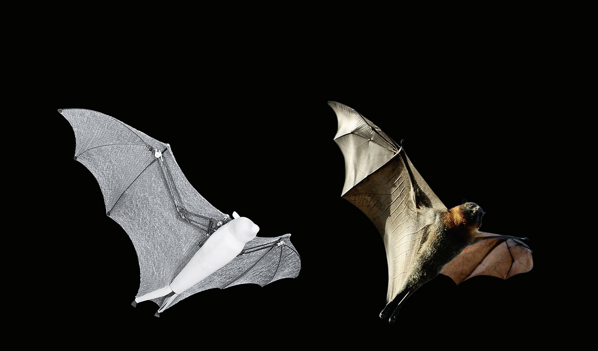

BionicFlyingFox
Ultraleichtes Flugobjekt mit intelligenter Kinematik
Für den BionicFlyingFox haben unsere Entwickler aus dem Bionic Learning Network den Flughund unter die Lupe genommen und sein spezielles Flugverhalten technisch umgesetzt. Durch das Zusammenspiel der integrierten On-Board-Elektronik mit einem externen Motion-Tracking-System kann das ultraleichte Flugobjekt sich dabei teilautonom in einem abgesteckten Luftraum bewegen.

Der Flughund (englisch: flying fox) zählt zur Ordnung der Fledertiere – die einzigen Säugetiere, die aktiv fliegen können. Ein besonderes Kennzeichen ist seine feine und elastische Flughaut, die sich von den verlängerten Mittelhand- und Fingerknochen bis zu den Fußgelenken erstreckt. Beim Fliegen steuern die Tiere mit ihren Fingern gezielt die Wölbung der Flugmembran und können sich so aerodynamisch und wendig durch die Luft bewegen. Dadurch erzielen sie einen maximalen Auftrieb, auch bei langsamen Flugmanövern.

Agile Kinematik nach natürlichem Vorbild
Bei einer Spannweite von 228 cm und einer Körperlänge von 87 cm wiegt der künstliche Flughund lediglich 580 Gramm. Seine Flügelkinematik ist wie beim natürlichen Flughund ebenfalls in Arm- und Handschwinge gegliedert und mit einer elastischen Haut bespannt, die sich von den Flügeln bis zu den Füßen fortsetzt. Dadurch ist seine Flügelfläche vergleichsweise groß und erlaubt eine geringe Flächenbelastung. Wie beim biologischen Vorbild liegen alle Gelenkpunkte auf einer Ebene, sodass der BionicFlyingFox seine Flügel einzeln ansteuern und zusammenfalten kann.
Speziell entwickelte Flugmembran
Die Flughaut des Modells ist hauchdünn, ultraleicht und gleichzeitig robust. Sie besteht aus zwei luftdichten Folien und einem Elastan-Gestrick, die an circa 45.000 Punkten miteinander verschweißt sind. Aufgrund ihrer Elastizität bleibt sie auch beim Einziehen der Schwingen nahezu faltenfrei. Die Wabenstruktur des Gestricks verhindert, dass kleine Risse in der Flughaut sich weiter vergrößern. Damit kann der BionicFlyingFox selbst bei leichten Beschädigungen des Gewebes weiterfliegen.

Teilautonomes Fliegen im abgesteckten Raum
Damit der BionicFlyingFox sich in einem definierten Luftraum teilautonom bewegen kann, kommuniziert er mit einem so genannten Motion-Tracking-System. Die Installation erfasst permanent seine Position. Gleichzeitig plant das System die Flugbahnen und liefert die dazu nötigen Steuerbefehle. Start und Landung führt der Mensch manuell aus. Im Flug übernimmt ein Autopilot.

Raffinierte Konstruktion: die im Rumpf verbaute On-Board-Elektronik im Zusammenspiel mit der Mechanik in den Flügeln
Bewegliches Kamerasystem für eine exakte Lokalisierung
Wichtiger Bestandteil des Motion-Tracking-Systems sind zwei Infrarotkameras, die auf einer Schwenk-Neige-Einheit (engl. pan-tilt unit) sitzen. Dadurch lassen sie sich so drehen und kippen, dass sie den gesamten Flug des BionicFlyingFox vom Boden aus verfolgen können. Die Kameras erkennen den Flughund dabei anhand von vier aktiven Infrarotmarkern, die an den Beinen und den Flügelspitzen angebracht sind.